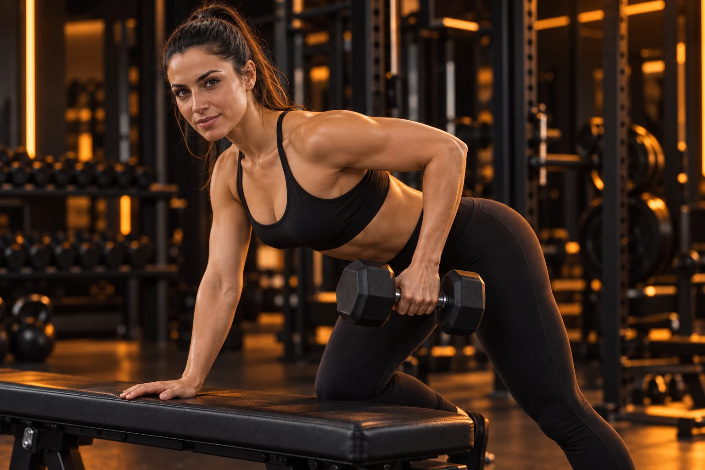
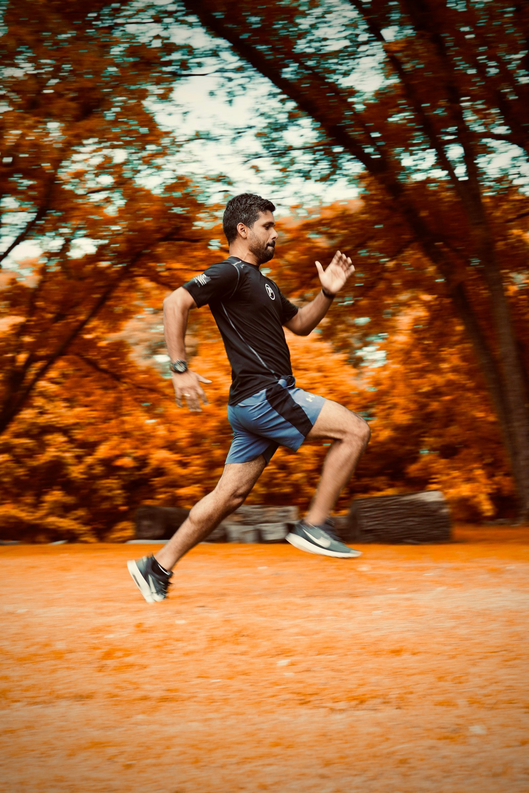
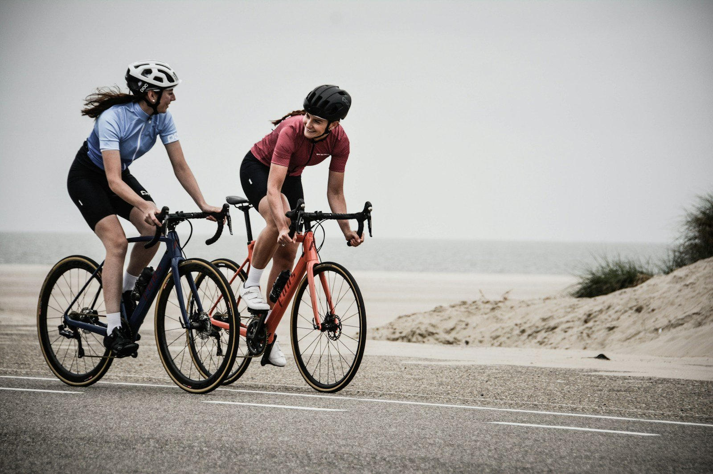
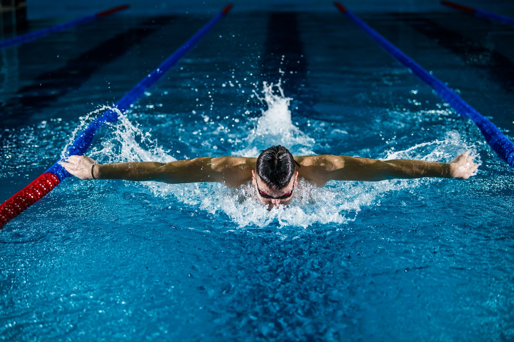
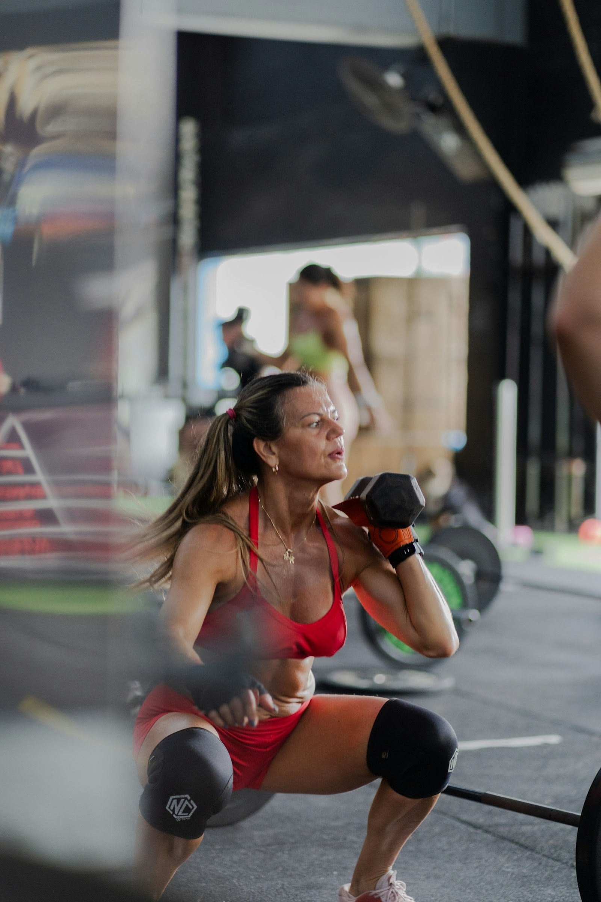

Essencial
Autonomia para treinar.
Estratégia para evoluir.
R$ 290/mês
- Avaliação inicial por videochamada
- Planejamento individual de treino
- Atualização mensal do programa
- Feedback quinzenal
Três formas de ter um treino com direção e alguém ao seu lado.
Autonomia para treinar.
Estratégia para evoluir.
Mais presença em cada fase.
Mais clareza em cada decisão.
Seu treino, lado a lado.
Atenção a cada movimento.
Planos e valores ilustrativos deste projeto conceitual.

Professora de Educação Física e personal trainer com foco na preparação de atletas de alto rendimento. Meu trabalho é transformar o seu objetivo em um plano de treino que respeita sua individualidade, seu esporte e a pessoa por trás do atleta.
Avaliação, periodização e progressão de cargas. Cada sessão tem um propósito dentro da sua temporada.
Escuta, ajustes e feedbacks ao longo do caminho. Você traz a dedicação. Eu acompanho cada etapa.

Força, economia de movimento e resistência para a pista e a rua.
Conhecer o treino ↗
Potência e consistência para sustentar o ritmo até a linha de chegada.
Conhecer o treino ↗
Preparação fora d’água, estabilidade e mobilidade para cada braçada.
Conhecer o treino ↗
Explosão, agilidade e controle para os desafios da sua modalidade.
Conhecer o treino ↗Histórico esportivo, rotina e objetivos como ponto de partida para o planejamento.
Construção de base e progressão de intensidade de acordo com as demandas da prova.
Exercícios e cargas organizados para desenvolver as capacidades que seu esporte exige.
Um calendário que conecta preparação, competição e recuperação ao longo da temporada.
Trabalho complementar de força e controle corporal para nadadores e triatletas.
Aceleração, desaceleração e mudanças de direção com progressão e intenção.
Amplitude de movimento e controle para executar os gestos do esporte com qualidade.
Preparação física complementar para suportar os ciclos de corrida, ciclismo e triathlon.
Percepção de esforço e registro do treino orientam as decisões da próxima sessão.
Descanso e ajuste de volume fazem parte da estratégia, especialmente perto das provas.
Análise dos exercícios e orientações claras para aproximar o acompanhamento online.
Objetivos definidos em conjunto e revisados conforme sua resposta ao treinamento.
Atenção à execução e à coordenação para construir uma base sólida antes de avançar as cargas.
Organização das etapas finais de treino em função da data, da distância e das exigências do desafio.
Força, intensidade e constância. Um olhar sobre a rotina de preparação.
Imagens ilustrativas geradas por IA para a personagem Marina Costa.
Exemplos de experiências de alunos • depoimentos fictícios e fotos ilustrativas.
“Passei a entender o propósito de cada treino. A preparação de força se encaixou na minha rotina de corrida e cheguei à largada muito mais confiante.”

Corrida de rua
“Eu precisava organizar o treino em torno das competições. Ter alguém olhando para a temporada inteira mudou a forma como planejo minha preparação.”

Triathlon
“Os feedbacks em vídeo me ajudaram a perceber detalhes que eu não via sozinha. O acompanhamento faz o online parecer muito mais próximo.”

Natação
“Minha rotina muda bastante. Os ajustes do plano me ajudaram a manter consistência sem perder de vista o meu objetivo para a próxima prova.”

Ciclismo
“Gostei de participar da definição das metas e entender minha evolução a cada etapa. O treino ganhou muito mais sentido para mim.”

Esportes coletivos
Vamos transformar dedicação em uma preparação com propósito?
Quero começar minha jornadaQual esporte faz parte da sua vida? Onde você quer chegar?
Preencha os campos para preparar sua mensagem.